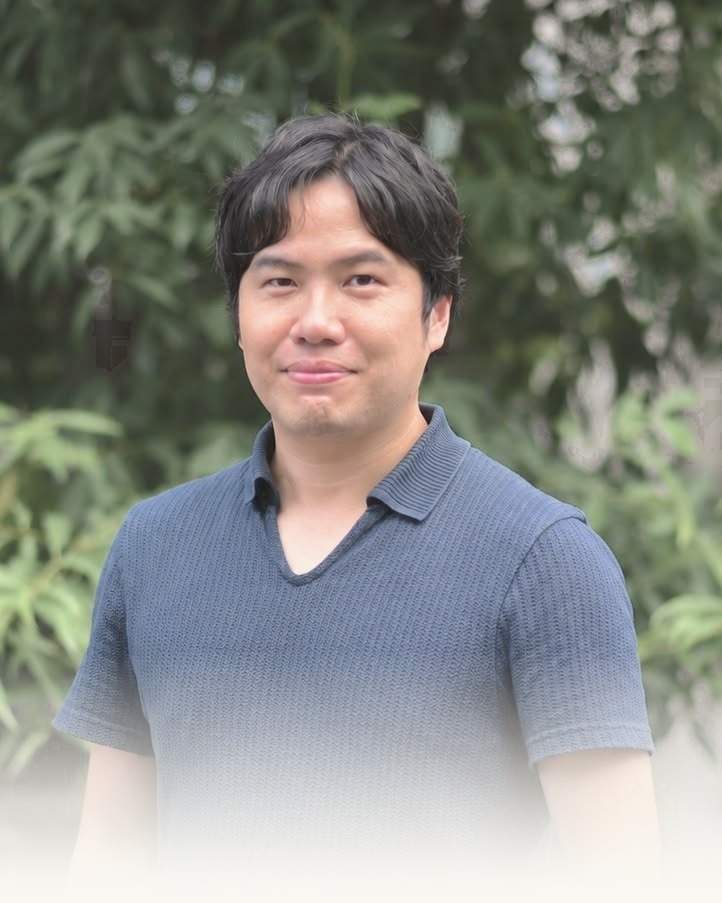

この人について
ひとつの領域に夢中で潜り、つかんだものを持って隣の領域へ渡る。ゲームから始まって、研究、プラットフォーム、起業、行政へ。その繰り返しを、得たものと失ったものの両方で書いておきます。

食事もせず、学校にも行かず、オンラインゲームに没頭した。親をずいぶん困らせた。それでも画面の向こうには世界中の仲間がいて、ギルドをまとめるうちに、リーダーシップと、多様な人と付き合う感覚を覚えた。
大学に入ると、決められた学びから一気に解放された。デザインも、プログラミングも、建築も学べる。違う専門を持つ人たちが同じ場所に集まっている。専攻の壁を越えて世界が広がったこの瞬間が、越境思考の始まりだった。
社会人2年目、構造改革が進み、先輩たちが去り、オフィスはお葬式のような空気になった。どんな大企業も永遠ではない。成長は自分で設計するしかないと、ここで知った。
子どものころ夢中になったゲームを、今度はつくる側に回った。発売1か月前に届いたボス戦の仕様変更にも、全力で応えた。遊びを本気でつくる現場の熱量を、体で覚えた。エピソードの補足をお願いします
製品の企画と開発を回し、やがて研究ディレクターとして「何を問うか」から考える仕事へ。海外の大学との共同研究や、ウィーンの歴史建築をフォトグラメトリで写し取る制作も経験した。どの時期の出来事か要確認
株式会社Play Life Studio を立ち上げた。共同創業者が会社を離れ、立て直しから始め直したこともある。ミッションは「世界をゲーム化せよ」。XR・デジタルツイン・生成AIを、産業現場と行政に実装している。
開発プラットフォームの側から、3D都市モデルや産業のデジタルツインに関わる。現在は NVIDIA のソリューションアーキテクトとして、産業向けの技術支援にあたっている。
千葉県のインフラDXアドバイザーとして、BIM/CIM・ICT施工の普及と職員研修を支援している。技術職は、課題と解決のあいだをつなぐ翻訳者だと思っている。
一度きりの人生を、ゲームのように。横断歩道の白いところだけを渡る子どものように、今に集中して、夢中で次の領域へ渡っていく。これからの一文をご本人の言葉で
資格や、より詳しい職歴は LinkedIn にまとめています。